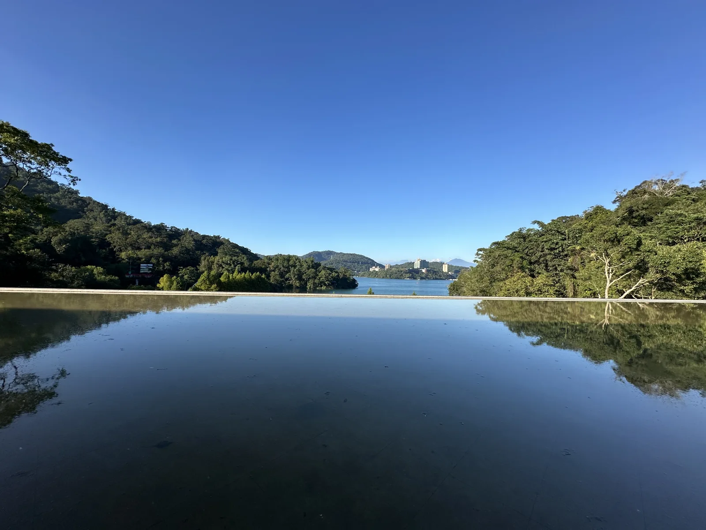

向山遊客中心 · 當次實拍4 天 / 3 晚埔里 → 日月潭 → 清境2026.10.08 — 10.11
最後一站・東草屯休息站
最後一站・東草屯休息站
01 / 行程方向總覽從山下到湖邊，
從山下到湖邊，
再走進山裡。
前兩天留在埔里與魚池，第三天遊日月潭，再往東北上清境。最後一天看完草原，下山到東草屯休息站，再繼續北返。
① 埔里城堡、日月町、酒廠與下午茶
② 日月潭／魚池米洛克飯店、早午餐、遊湖與茶廠
③ 清境樹屋、晚餐與青青草原
④ 東草屯下山後的休息站
相對方向示意，位置與距離不按比例。照片時間為拍攝區間，不代表抵達與出發時間。
四天實際路線點選地點，跳到當日紀錄
- 10/8 新北 → 埔里城堡
- 10/9 埔里 → 魚池晚餐 → 米洛克景觀飯店
- 10/10 日嶼早午餐 → 伊達邵碼頭 → 遊湖 → 向山 → 老茶廠 → 清境
- 10/11 清境青青草原 → 東草屯休息站 → 北返
示意圖依實際行程方向繪製，地點相對位置與路徑均不按比例，僅供回顧行程。
THREE NIGHTS / 三晚住宿
城堡、湖景，再到樹屋。
用當次的建築與風景，
記住每一晚。
02 / 每日行程
照著四天的順序，慢慢看。
時間標示為照片拍攝區間。
點照片可放大，網路照片另標來源。
03 / 地圖指南
把旅行放回地圖上。
04 / 行前清單與原規畫
留給下次出發的準備。
以下是準備建議，勾選狀態只存於目前裝置與瀏覽器，不代表當次已完成。原本的訂位、備選與返程時間保留在下方原行前手冊。
旅行資料
自駕與山區用品
原 V3 行前手冊（出發前規畫，非實際紀錄） ＋
以下為 2026/10/7 的原行前規畫；預計時間、備選地點與訂位提醒未回填為已完成。實際旅程請以本頁每日行程為準。